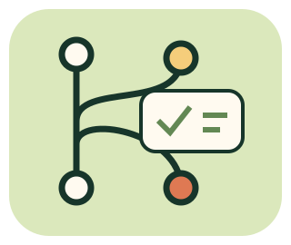

Git
版本控制工具。本機 commit 不等於已上傳。
GIT ≠ GITHUB ≠ GITLAB
會 commit 之後，還要會把問題說清楚、提出修改、讀懂檢查，最後確認交付。12 個任務，不用先註冊帳號。

版本控制工具。本機 commit 不等於已上傳。
提供儲存庫託管、Issue、審查與自動化協作；不是 Git 的另一個名字。
GitHub 的 Pull Request／GitLab 的 Merge Request：提出變更供討論與審查，不是建立了就已合併。
自動建置與測試不等於網站已更新；要另外核對部署及正式結果。
所有儲存庫、審查、CI、成員與憑證都是教學模擬；不呼叫平台 API、不執行真實指令、不登入、不推送、不寄通知、不部署真專案。只留本分頁記憶體，重新整理即清空。平台權限與功能依版本、方案與專案設定不同；題目規則會明示。
先讀資料包，再點操作；每一步會改變右側專案狀態。操作不是真的發送到平台。
可有不同有效順序；以結果核對。參考與首次成果分開記錄。
GitHub Skills（需 GitHub 帳號的實作課程）適合之後真的建立練習儲存庫；這裡先做不需帳號的模擬，不自動替你開專案。
查核日：2026-11-13。GitLab 文件網站此次回傳403，概念另以官方程式庫鏡像中的文件核對；不是聲稱已開啟該站全文。權限文件鏡像。實際操作仍以你使用的版本及設定為準。